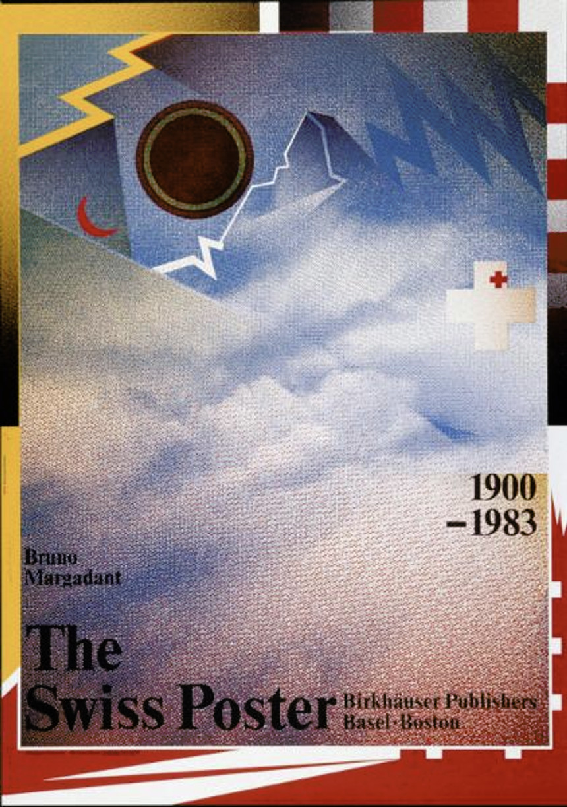

Typographer
Graphic Design
The Father of New Wave Typography
1
WOLFGANG WEINGART
06 Feb 1941
12 july 2021
WOLFGANG WEINGART
Designed by. lody
Born in 1941 in southern Germany, Weingart attended the Merz Akademie in Stuttgart from 1958 to 1960. His design education focused on typesetting and the process of making linocuts and woodcuts. This was an important foundation, because everything changed once Weingart discovered Swiss Typography—also known as International Typographic Style.
New Wave
Swiss Punk
Expressive
Experimental
2
Since the 1970s, Wolfgang Weingart has exerted a decisive influence on the international development of typography.
-
3
This illustration of Weingart granted the Swiss Poster Award in 1977. The meticulous pictorial and textual layout of this poster reveals Weingart’s eccentric and non- conformist approach to typography. The synthesis of this abstract and chaotic collage summarizes his eager for experimental designs that question the visual standards and laws.Kunstkredit 1976/77
-
Every year the museums of the city of Basel present the new Art acquisitions of the year and ask Wolfgang Weingart to design the poster. The exhibition was called "Kunstkredit". From 1968 Wolgang Weingart was teaching Typography in the basel Art and Craft school (Schule für Gestaltung) making conferences and seminars on Typography in Europe and in the US. He created his own graphic expression in posters and magazine based on photo-montage, computers works and Typography.
Kunstkredit 1977/78
-
Although he experimented with photo-optical processes, he found that phototypesetting, which was a topical theme at the time, was not a viable alternative for him. He preferred to work by hand and see the marks left by the different materials during the printing process. By getting physically involved in the design and implementation processes, Weingart was better able to control them and react to unexpected circumstances. The unusual technique of overlaying lithographic film opened up a new area of experimentation for him. The material’s transparency made it possible to overlay letters and images.
Es war einmal und ist nicht mehr
-
This granted poster in 1980 by the Swiss Poster Award reflects Weingart’s typographic experimentations deriving from the semantic, syntactic and pragmatic functions of typography. In comparison with the Swiss Typography, based on the syntactic function, with this poster Weingart expresses his interest in extending the graphic qualities of typography.
Kunstgewerbemuseum Zürich
-
A poster for the book about Swiss poster collection of Bruno Margadant in Basel in 1983. A great Wolfgang Weingart poster showing a montage of strong symbols of Switzerland as the white cross and the Matterhorn over Zermatt. Wolfgang Weingart is a designer and an instructor at the Schule für Gestaltung in Basel, Switzerland. His unique design nature, led by his typographic explorations, importantly influenced the development of the international arena of typography. As an advocate of the Swiss Style, Weingart is perceived as a pioneer of the “New Wave” or “Swiss Punk Typography”.
The Swiss Poster
-
 Already a trained typesetter before entering the Basel School of Design, the epicenter of Swiss International Style, Weingart was a somewhat precocious student. Training under Armin Hoffmann, Weingart showed so much promise that he was hired back to teach typography after his graduation. He overlapped images, used enlarged half-tone patterns and graphic visual elements. Some in the design community took umbrage to his approach (New Wave), but rather than a rejection of the Swiss style, Weingart saw his work as the next logical progression.
Already a trained typesetter before entering the Basel School of Design, the epicenter of Swiss International Style, Weingart was a somewhat precocious student. Training under Armin Hoffmann, Weingart showed so much promise that he was hired back to teach typography after his graduation. He overlapped images, used enlarged half-tone patterns and graphic visual elements. Some in the design community took umbrage to his approach (New Wave), but rather than a rejection of the Swiss style, Weingart saw his work as the next logical progression.Kunstkredit 1982/83
4
What's the use of being legible,
when
nothing inspires you to take notice of it?
Diagonal Type
Stylistic
Creative
Communication
Bold